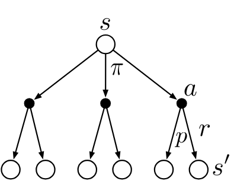
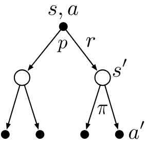
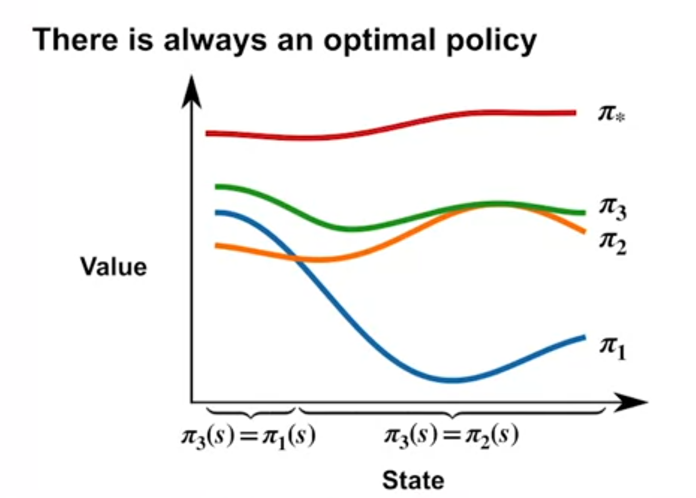
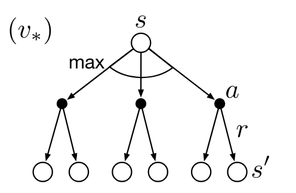
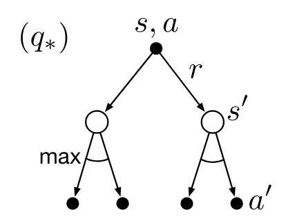

Decision theory is the branch of Mathematics dealing with the analysis of decisions by a single agent. Game theory is the branch of Mathematics dealing with the analysis of decisions by multiple agents. The introduction of a second agent makes the problem more complex and introduces the notion of strategic behavior. Decision theory is in many ways a simplification of game theory. In [@silver2015], Dave Silver responded to a question that a simple way of viewing MARL is that each agents are an independent decision maker.
Once the problem is formulated as an MDP, finding the optimal policy is more efficient when using value functions.
This week, we learn the definition of policies and value functions, as well as Bellman equations, which are the key technology behind all the algorithms we will learn.
For someone with a background in game theory, the concept of a policy \pi is not new in game theory, we call this a strategy and it is a mapping from states to actions. i.e. an assignment of some action to each state representing the best action that an agent should take in that state.
A second familiar concept is the value function. In game theory, we call this the payoff for an action. The payoffs are typically assigned to the terminal states of the game and can be backpropagated to non-terminal states using the laws of probability. Here we are interested in the expected value of the rewards that an agent can expect to receive when following a policy \pi from a given state s.
I found the Policy and values functions somewhat families due to some background in game theory and markov processes.
I found the Bellman equations more of a challenge. I think the main issue is the unfamiliarity with the notation which make the material look like gibberish. However, the more I made myself more familiar with the notation, I came to see that these equations express a rather simple idea.
We describe a MDP as a linear process in time. However, it is really a tree of possible actions. What the Bellman equations express is that if we want to estimate the value v_\pi(s) of a state or more specifically the value of an action q_\pi(s,a) what we do is consider the immediate rewards and then we have have a copy of pretty much the same tree. As we move forward in time we will end up making ever smaller (discounted) corrections to our best assessment.
Lesson 1: Policies and Value Functions
Read
Learning Objectives
Policy Definition
- A policy \pi is a distribution over actions for each possible state.
- It is denoted by \pi(a|s), which is the probability of taking action a in state s under policy \pi.
Stochastic vs Deterministic Policies
- A policy can be deterministic or stochastic.
- A deterministic policy is a policy that selects a single action in each state.
- For example, the greedy policy selects the action with the highest value
- A stochastic policy is a policy that selects actions with some probability that can be conditioned on the state.
- For example the uniform policy selects each action with equal probability.
Value Functions
- We generally want to evaluate the value of each state or better yet the value of each action in each state before we create the policy. To do this we define two types of value functions:
State-value functions V_\pi
The state-value function v_{\pi}(s) is the expected return when starting in state s and following policy \pi thereafter.
v_\pi(s) \dot = \mathbb{E_\pi}[G_t|S_t = s] \quad \text{for policy} \quad \pi \qquad \tag{1}
Action-value functions Q_\pi
The action-value function q_{\pi}(s,a) is the expected return when starting in state s, taking action a, and following policy \pi thereafter.
q_\pi(s,a) \dot = \mathbb{E_\pi}[G_t|S_t = s, A_t = a] \quad \text{for policy} \quad \pi \qquad \tag{2}
Relationship between Value Functions and Policies
In the short term, the value functions are more useful than the return G
- The return G is not immediately available
- The return G can be non-deterministic.
The value functions are deterministic and can be computed from the MDP.
Lesson 2: Bellman Equations
Goals
Bellman Equation for State-Value Functions

Bellman Equation intuition
Richard Bellman was a uniquely gifted mathematician who worked on dynamic programming. The Bellman equations is a recursive equation that decomposes the value of a state into the immediate reward and the discounted value of the successor state. These equations form the basis of Dynamic Programming which is used in disparate problems including
- Schedule optimization
- String algorithms (e.g. sequence alignment)
- Graph algorithms (e.g. the shortest path problem)
- Graphical algorithms (e.g. the Vitrebi algorithm)
- Bioinformatics (e.g. lattice models)
Although Bellman was one of the greatest problem solvers of the 20th century, he was not a great communicator. He was known for his terse and cryptic writing. The Bellman equations are a case in point. They are simple to understand once you get the hang of them but they are not easy to read for the first time. However the key to understanding the Bellman equations is to understand that they are a recursive equation based on some physical process
The trick that one learns over time, a basic part of mathematical methodology, is to sidestep the equation and focus instead on the structure of the underlying physical process – Richard Bellman
in the case of RL the recursive physical process is: S \rightarrow A \rightarrow R. \tag{3}
and we can diagram it using a backup diagram as shown in the Figure 3 above.
The name backup diagram comes from the idea that we are backing up the value of the state v(s) from the successor state v(s'). I.e. we are going back up the tree of possible effects of some action a starting from the state s.
While the Bellman equation are difficult to read, remember and to derive, the backup diagram are very easy to sketch even if you don’t remember the equations. Once you have sketch the backup diagram, you should be able to easily derive the Bellman equations.
This same intuition can be used for working through all the above dynamic programming algorithms!
The Bellman equation for state-value functions is a recursive equation that decomposes the value of a state into the immediate reward and the discounted value of the successor state.
\begin{align} v_\pi(s) &= \mathbb{E_\pi}[G_t|S_t=s] \newline &= \mathbb{E_\pi}[R_{t+1} + \gamma G_{t+1}|S_t=s] \newline &= \mathbb{E_\pi}[R_{t+1} + \gamma v_\pi(S_{t+1})|S_t=s] \newline &= \sum_a \pi(a|s) \sum_{s'} \sum_r p(s',r|s,a) (r + \gamma \mathbb{E_\pi}[G_{t+1}|S_{t+1}=s']) \newline &= \sum_a \pi(a|s) \sum_{s'} \sum_r p(s',r|s,a) (r + \gamma v_\pi(s')) \end{align} \tag{4}
Bellman Equation for Action-Value Functions

The Bellman equation for action-value functions is a recursive equation that decomposes the value of a state-action pair into the immediate reward and the discounted value of the successor state-action pair.
\begin{align} q_\pi(s,a) & \dot = \mathbb{E_\pi}[G_t|S_t=s, A_t=a] \newline &= \sum_{s'} \sum_r p(s',r|s,a) (r + \gamma \mathbb{E_\pi}[G_{t+1}|S_{t+1}=s']) \newline & = \sum_{s'} \sum_r p(s',r|s,a) (r + \gamma \sum_{a'} \pi(a'|s') \mathbb{E_\pi}[G_{t+1}|S_{t+1}=s', A_{t+1}=a']) \newline &= \sum_{s'} \sum_r p(s',r|s,a) (r + \gamma \sum_{a'} \pi(a'|s') q_\pi(s',a')) \end{align} \tag{5}
Bellman Equations
the bellman equations capture the relationship between the current value and the future value. The Bellman equations are a set of equations that express the relationship between the value of a state and the value of its successor states. The Bellman equations are used to compute the value functions of a Markov Decision Process (MDP).
Example: Gridworld
| A | B |
| C | D |
In the 2x2 gridworld example, the agent can move up, down, left, or right. The agent receives a reward of 0 for each step taken unless it gets to location B for which it gets +5. The agent receives will return to the current cell if it bumping into the wall.
We will use the uniform random policy where the agent selects each action with equal probability.
gamma = 0.7
lets calculate the value of each state using the Bellman equation.
\begin{align} v_\pi(A) &= \sum_a \pi(a|A) \sum_{s'} \sum_r p(s',r|A,a) (r + \gamma v(s')) \newline &= \sum_a \pi(a|A) (r + 0.7 v_\pi(s')) \newline &= 0.25 \times 0.7 \times v(A) + 0.25 \times (5 + 0.7 \times v(B)) + 0.25 \times 0.7 \times v(C) + 0.25 \times 0.7 \times v(A) \newline v_\pi(B) &= 0.25 \times 0.7 \times v(A) + 0.5 \times (5 + 0.7 \times v(B)) + 0.25 \times 0.7 \times v(D) \newline v_\pi(C) &= 0.25 \times 0.7 \times v(A) + 0.5 \times (0.7 \times v(B)) + 0.25 \times 0.7 \times v(C) \newline v_\pi(D) &= 0.25 \times 0.7 \times v(B) + 0.5 \times 0.7 \times v(C) + 0.25 \times 0.7 \times v(D) \end{align} we can solve these equations to get the value of each state.
theses are
\begin{align*} v_\pi(A) &= 4.2 \newline v_\pi(B) &= 6.1 \newline v_\pi(C) &= 2.2 \newline v_\pi(D) &= 4.2 \newline \end{align*}
We can use the Bellman equation to calculate the value of each state in the Gridworld. The value of each state is the expected return when starting in that state and following the policy \pi thereafter. The value of each state is calculated by summing the immediate reward and the discounted value of the successor states.
For larger MDP the Bellman equations are not practical method to calculate the value of each state. Instead, we will use algorithms based on the Bellman equations to estimate the value of each state.
Lesson 3: Optimality (Optimal Policies & Value Functions)
Goals
Optimal Policy

- A policy pi_1 is better than a policy \pi_2 if v_{\pi_1}(s) \geq v_{\pi_2}(s) for all states s.
- Given any two policies \pi and \pi', if we pick the action that maximizes the value function, from either at every state, we will get a new policy that is at least as good as both \pi and \pi'.
- There is always at least one deterministic optimal policy for any MDP.
- An optimal policy \pi^* is a policy that is at least as good as every other policy in every state.
- The optimal policy is denoted by \pi^* and is defined as:
\pi^* \dot = \arg \max_{\pi} v_{\pi}(s) \quad \forall s\in S \tag{6}
Bellman Optimality Equation for State-Value Functions

The Bellman optimality equation for state-value functions is a recursive equation that decomposes the value of a state into the immediate reward and the discounted value of the successor state under the optimal policy.
\begin{align} v_*(s) & \dot = \max_{\pi} v_{\pi}(s) \quad \forall s \in S\newline & = \max_a \mathbb{E}[R_{t+1} + \gamma v_*(S_{t+1})|S_t=s, A_t=a] \newline & = \max_a \sum_{s'} \sum_r p(s',r|s,a) (r + \gamma v_*(s')) \end{align} \tag{7}
Bellman Optimality Equation for Action-Value Functions

The Bellman optimality equation for action-value functions is a recursive equation that decomposes the value of a state-action pair into the immediate reward and the discounted value of the successor state-action pair under the optimal policy.
\begin{align} q_*(s,a) & \dot = \max_{\pi} q_{\pi}(s,a) \quad \forall s \in S, \forall a \in A \newline & = \mathbb{E}[R_{t+1} + \gamma \max_{a'} q_*(S_{t+1}, a')|S_t=s, A_t=a] \newline & = \sum_{s'} \sum_r p(s',r|s,a) (r + \gamma \max_{a'} q_*(s',a')) \end{align} \tag{8}
Martha White asks the question: “How can \Pi_3 have better strictly better values than both \Pi_1 and \Pi_2 in all states if all we did is take the best action in each state from either \Pi_1 or \Pi_2?”
This is because if for example we found a fast path through a bottleneck for any state that is before the bottleneck will have a higher value in the other policies which may have had longer paths through the bottleneck.
Optimal Value Functions
- The optimal value function v_*(s) is the expected return when starting in state s and following the optimal policy thereafter.
- The optimal action-value function q_*(s,a) is the expected return when starting in state s, taking action a, and following the optimal policy thereafter.
- An optimal policy can be obtained from the optimal action-value function by selecting the action with the highest value.